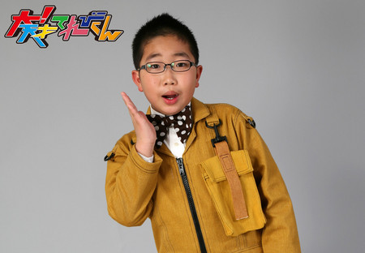
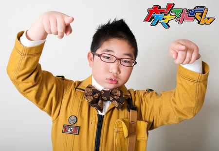
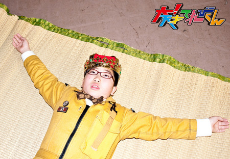
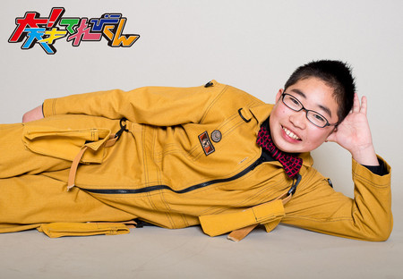
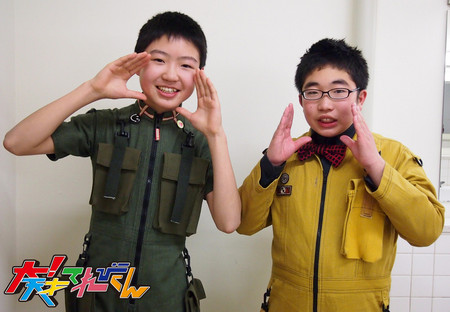

<< �O�̋L�� | �g�b�v�y�[�W | ���̋L�� >>
2014�N03��11�� (��)�y���Ɓu��I�V�˂Ă�т���v�z���c����
�����Ɓu��I�V�˂Ă�т���v��
�͂��A�ǂ����A���N�o���Ă����c����ł��B
�l�́A�u��I�V�˂Ă�т���v���n�܂������ɁA�Ă�ѐ�m�ɂ͂���܂����B
�ŏ��́A�i���ꂢ�Ȃ��Z����A���o�������ς�����[�j�Ǝv���܂��āA�ƂĂ��ْ����܂����B
����ȃh�ْ����Ă��鎩�����A
����̐�y�ɁA�₳�������������Ă�����āA�b�����āA
�w�Ă�ѐ�m�x�Ƃ������̂́A�߂����Ⴍ����y�����Ƃ������Ƃ��킩��܂����B
��������A1��ڂ̎B�e���錻��ɊF�ł͂�������A�������̐l���I�I
���AP�ł����B
�����āA�B�e���n�܂�A���e�́A�o�����P�ɏ��Ζʂ��܂����B
�����傫���āA�Ê��݂������ς����āA�e���r�̂܂�܂����[�B�Ǝv���܂����B
���̌�ɁA���ꂩ��1�N�ꏏ�ɉ߂����Ă��������o�[�ŁA�J���[�����������ĐH�ׂ܂����B
���̎����A��y�̕����炨�b���Ă���āA����ȂɊy�����āA�ʔ������͖̂������I�I
�����A�v���܂���ł����B
���ꂩ��A�����ȎB�e�����Ă����āA
�y���ɂ��鎞���A�X�^�W�I�ɂ��鎞���A�F�Ŋy�����߂����āB
�݂�ȂƂ��ʂꂵ�āA��l�ɂȂ��������A
�����ƁA�Ă�ѐ�m�̂��Ƃ����[���ƍl���āA�j�R�j�R�n�b�s�[�ł����B
�����Ȑ�y���A�l�̂��Ƃ��������Ă���Ă�[���āB
�������y���������[�B�i�܁j
�����āA2012�N�x�A2�N�ځB
���܂ňꏏ�ɂ���Ă������Ԃ������āA�V�l���͂����Ă��܂����B
���O�ɕ����Ă͂����̂ł����A�������킩�Ȃ���
�����A�獇�킹�̎��A�n���p����Ȃ��߂��������ł��B
���l�����ŁA�ʎ��ɂ������A
��y�Ɂu���܂ł���Ă������Ԃ���������������ǁA���v�H�撣�낤�ˁI�I�v
���̐������Ƃ��A�߂��݂�MAX�ɂ������āA���������Ⴂ�܂����B
�₵���āA�₵���āB
�S�R�܂��~�܂�Ȃ��������A��y���A�͂��܂��Ă���܂����B
�����ŁA������2�N�ځB
���܂ł��A��y�ł����Ȃ����Ǝv���A�₵���Ƃ����C�������A�܂������āA�܂͎~�܂�܂���ł����B
�����āA�獇�킹�́A�������炢�����āA����܂肢�܂���ł����B
��������A���X�Ɋ���Ă����A1���ڂ̎B�e�B
�ȁA�Ȃ�ƁA�����ʒu�����̗�[�B
������Ɛ�y�̎����������܂����B
�����āA������1���ڂ̎B�e���I���B
���̑��̐��X�̎B�e���Ă�������A�y���ȂǂŁA
2�N�ڂ̐�y�炵�����Ƃ́A�A�A
�o���܂���ł����B
���ʂɐ�y�ɂ��������āA�������Ă��܂����B
�{�X��A�����Ƃ��A�ς��Ȃ��߂����Ă����܂����B
�Ă�ѐ�m�̒��̗ǂ������ς�炸�ŁA�V�肵�āA�����ɎB�e�����Ă����B
�����ǂ��܂܉߂�����7���A�ăC�x�Ɍ����Ă̗��K���X�^�[�g���܂����B
���������A2�A3�T�Ԗ������K�����̂ł����A�߂���߂���߂���y���������ł��B
�_���o����A���c����K���������āA��ς��������ǁA
�Ă�ѐ�m�̃n�b�s�[�x�������āA�c�����Ǝv�������͖��������ł��B
�����āA�{�Ԃ������I�I
���C���[�Œ����̂��听�����܂����B
�����A�y���������Ȃ��[�[�[�B
�Ă�ѐ�m���J���A��苭���A�[�܂�܂����B
�J���[�܂����܂܁A�ς�炸�A�y�����������Ă����āA
2012�N�x���I���V�[�Y���B
�F�X�A�Ō�̂��̂��B��I���܂����B
���̂Ƃ��́A���Ƃ���̂��A��2��4���B
�{����2012�N�x�A�Ō�̂��̂��B��I���܂����B
�y�������C���C���邱�Ƃ��o���Ȃ��Ȃ��B
1�x�A���Ԃ̑��Ƃ������̂ŁA�ǂꂾ���炢���Ă����̂��������Ă܂����B
�ق�ŁA���ʂ�̂Ƃ��B
�u������l�ł����v
���̈ꌾ�ŁA����܂����B
���̎��́A�S���ʂ����Ă����������Ȃ��A�܂����T�����Ɠ��̂ǂ����Ŏv���Ă܂����B
3�N��
2013�N�x�B
�V�l����4�l�����Ă��܂����B
�����Ă���4�l�܂߁A
�݂�Ȃł���ׂ��āA���ǂ����Ă��������ĂȂ��Ă鎞
����������Ȃ��������A�����Ƃ��Ă܂����B
���[���ƃ����������Ă��āB
�C�t������ł��B
������y�͈�l�������Ȃ��B
������Ȃ����������͐�y�̑��݂ł����B
�����������́A��y��7�l���܂����B
2�N�ڂŁA5�l�B
3�N�ڂł�1�l�ɂȂ��Ă��܂����B
���܂ł́A��y�ɗ����āA�Â��āA�y�����߂����܂����B
��y���Ă������݂�����Ƃ��ɂ́A
�������A�t���b�g�ȏ�ԂȂ̂ŁA������Ȃ�������ł���
���Ƃ��āA������܂����B
��y���Ă����̂́A�����ɂƂ��āA�Ƃ��Ă��Ƃ��Ă��傫�����݂��Ă������Ƃ��B
����ȕs���ɑς��Ȃ���A�������܂����B
�Ƃ͂������́A��y�����Ȃ������ɂ���������܂����B
�����āA���ς�炸�A���C���C�L���b�L���b�y�������X�ł����B
�B���|��A�č��h�Ȃǂ��A�y�����������A����オ��́A�E���オ��ł����B
������12���B
1��11���Ɍ����ẮA�~�C�x�m�Â��n�܂�܂����B3�x�ڂł��B
�����S�̓I�ɕ��͋C��������܂��B
���̖����̌m�ÁB���ꂪ�A�܂��y�����Ă���[���Ȃ��B
�O�l�A�c�������Ƃ��A�y���������Ă��܂��B
�����āA�����Q�l�v���H�͂���I�I
���H�����{�ԁH�Ƃ��������ł����B
��������[�܂ł����B
���̌�ɁA�����u��̃A���J��Question�v�̗��K������܂����B
�~�C�x�ŁA�J�����܂��Ă���̂ŁA�������y���������ł��B
���R�[�f�B���O�������ɏI���B
�܂��܂��A���́A�Ō�̐������ւ̗��K�B
�g�����|�����A�_���X�A�̂��撣��܂����I�I
3�N�ԁA
�F�X�ȔZ���Ŋy�����āA�y�����āA�y������
���l�N�^�C���āA��y�ɊÂ���
���܂Ɏ�������y�ɂȂ��āA�V��ŁA�J�[�߂āA���āA�����āA�Ƃ�āA
�F�X�ȋC�����ŕ\��ɏo�āA�c�b�R�܂�āA���āB
���ɕ�������A�{�[���R������A�����Ȃ�����i���������j
��蕨���[������������A
�������t��������A�̂�����A���ǂ�����A
�ʐ^�B������A�u���O��������A�M���O������A�l�̘b������
���[�[�[�[�[�[�[�[�[
�S�āA�y���������y���������y���������[�[�[�[�[�B
�\������Ȃ��B
���̑f���炵���B
�߂��Ȃ�A�߂肽��
�u�V���w��5�N���̓��c����ł��B���ꂩ��X�������肢���܂��B�v
���Ă����Ă鎞�ɁB
�܂������킩��Ȃ���ԂŁA�������珙�X�ɍl���āA�w��ŁA�������āA
���āA�]��ŁA�w��ŁA�B
��������A3�N�o�̂��A��������B
���������A�S�āA1����∞�܂ŁA�y���������B
�������n�b�s�[�������B
����ȃn�b�s�[�ȁu��I�V�˂Ă�т���v�Ɋւ�����W�҂̕��X
�Ă�ѐ�m�AMC�w�A�ꏊ�A���A�S�ĂɊ��ӂ������B
�������u�Ă�ѐ�m�v�Ƃ��ĉ߂����Ă��āA�ō��ł����I�I
�@�@�@�@�@�@�@�@�@�@�@�@�@�@�@�@ �@���ɂ���1���@���c����
2011 �N

2012�N


2013�N


���e��:���c���� | ���e����:18��00��


 " title="�\�[�V�����u�b�N�}�[�N�ɂ���">
" title="�\�[�V�����u�b�N�}�[�N�ɂ���">
��NHK�T�C�g�𗣂�܂��B

{kind=link}
{kind=link}
{kind=link}
{kind=link}
{kind=link}